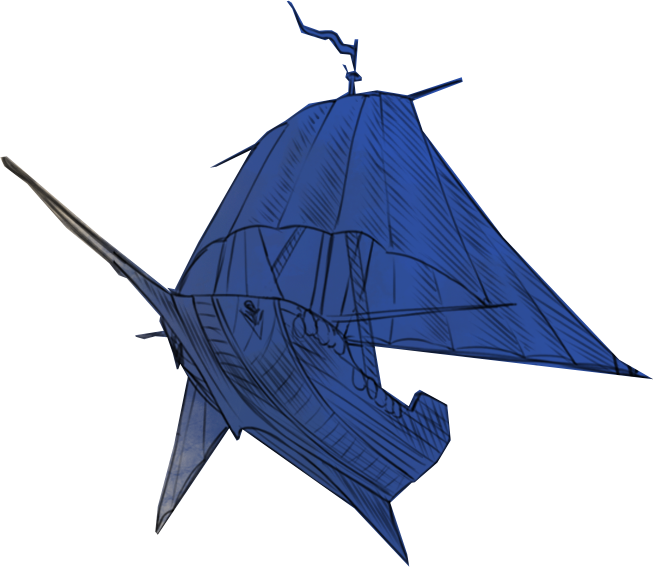

About
The Author

If you’re here then perhaps I am lucky enough to count you as one of my readers.
If that’s the case, then I am incredibly grateful for your support. Truly, it is a dream come true to bring you fantasy stories, those which I hope you can lose yourself in as much as I did.
A Writer By Accident
I was born in July 1991 in Sydney, Australia. I grew up with a grandfather who was a published author, with a mother who was also a writer and a sister who followed in the family tradition long before I did (and whose writing I am sure will soon become wildly successful).
But I never wanted to be a writer. Far too obvious a profession given my family history, I thought; not to mention that I took far too much pleasure in reading and saw no reason to put down the book to pick up the pen. But, then, at the age of thirteen I found myself drafting my first script, in university I began formulating story ideas, and by the age of thirty I suddenly had an outline for a fantasy trilogy fully mapped out. I guess it happened accidentally — it was never a conscious choice, but it happened and so here we are. I cherish every day I spend at my desk trying to bring you the best possible magical tales.
From Courtrooms to the Maelum
Originally, I wanted to be a criminal defence lawyer. During my law degree it just sounded so rewarding, standing up in front of a full court room and cross-examining police officers who sometimes had biases against my clients simply because of their skin colour, race, sexual orientation, or anything else that made them an “other”. And it was rewarding. My passion for justice and equality meant that within a couple of years I was the head of a criminal law department and working in the Supreme Court of NSW on bigger cases, with higher stakes and an interesting occasion when an Australian news network accidentally posted a photo of myself as the alleged murderer rather than my client (still very sorry for those phone calls, mum).
But it wasn’t until I’d written the first chapter of The Burned Name that I knew what I was really meant to do.
Thank You
Mark Twain once said that the two most important days in your life are the day you are born and the day you find out why. The day I wrote that chapter was that second day.
So I hope, if you have trusted me to bring you stories, that I can live up to the responsibility of your expectations.
I also hope that we might be able to discuss these stories together sometime, perhaps at a book convention, a random bump-in on the street, who knows.

Till then, thank you for allowing me to do what I love.
I am forever grateful for you.